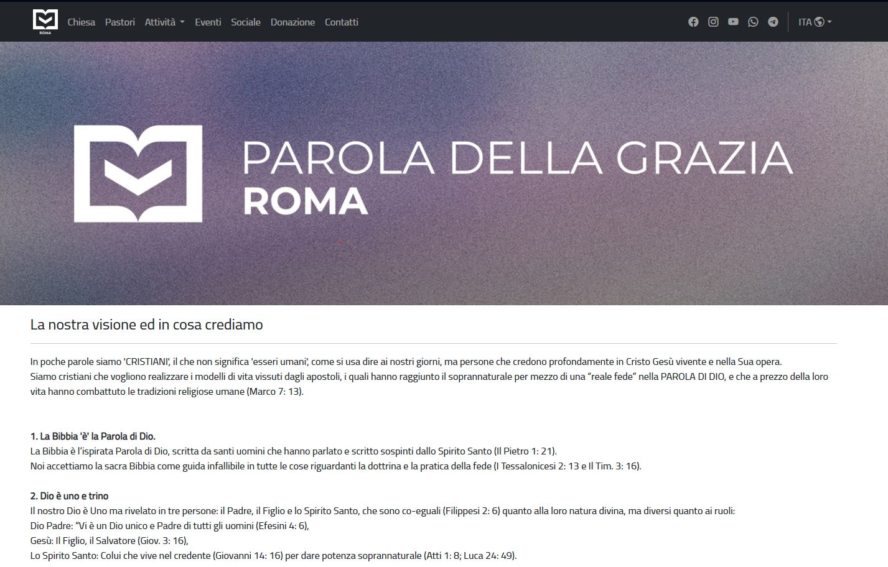
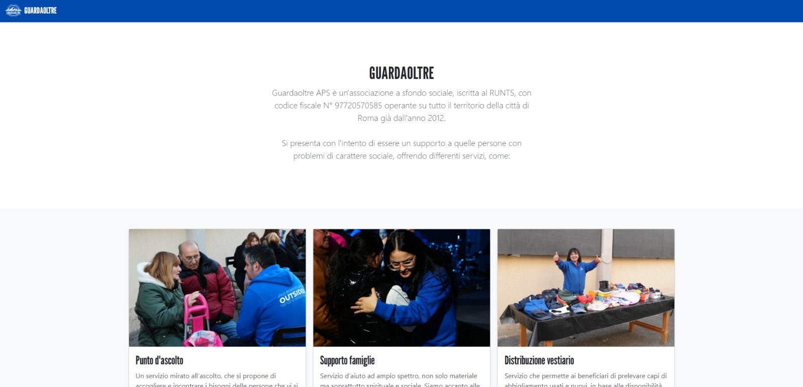

Design che
risolve
problemi veri
Sono Danixa Molina, UX/UI Designer specializzata in interfacce web intuitive, accessibili e responsive. Progetto e gestisco siti web reali con Figma e FigJam, basando ogni scelta sulla ricerca e sull'empatia con l'utente.
Design centrato
sull'utente
Ho completato il corso di UX/UI Design presso Boolean, dove ho imparato a progettare interfacce digitali attraverso un processo strutturato: dalla ricerca utente ai wireframe, dai prototipi ai test di usabilità.
Attualmente lavoro come UX/UI Designer per PDG Roma & GuardaOltre, dove progetto, ottimizzo e gestisco i siti web di due associazioni no-profit, curando esperienza utente, wireframe e identità visiva online.
Credo che il buon design non si veda: funziona e basta. Ogni scelta visiva deve avere una ragione, ogni flusso deve ridurre la fatica cognitiva dell'utente. Sono sempre aperta a nuove opportunità in team dinamici dove continuare a crescere e mettere alla prova nuove competenze.
Case Study

Parola della Grazia
Progettazione e ottimizzazione del sito web dell'associazione: nuova identità visiva online, wireframe e interfaccia responsive per garantire coerenza stilistica e navigazione intuitiva.
Visita il sito →
GuardaOltre
Analisi dei bisogni degli utenti e ottimizzazione continua delle pagine per migliorare accessibilità, usabilità e impatto comunicativo del sito.
Visita il sito →Nuovi case study in arrivo
Sto preparando approfondimenti dettagliati sul mio processo di design, dalla ricerca al prototipo. Nel frattempo, scrivimi per una demo dal vivo del mio lavoro.
Contattami →Cosa so fare
- Figma
- FigJam
- User Research
- Usability Testing
- Wireframing
- Prototyping
- Design System
- Responsive Design
- Accessibilità
- Interaction Design
- Claude
- Gemini
- ChatGPT
- Problem Solving
- Comunicazione
- Lavoro di team
- Apprendimento rapido
Il mio processo
Scoperta
Ascolto, ricerco e comprendo il problema. Interviste utenti, analisi competitiva, definizione degli obiettivi.
Definizione
Sintetizzo i dati in personas, user journey e problem statement chiari su cui basare le soluzioni.
Ideazione
Sketching, crazy 8s, wireframe a bassa fedeltà. Genero molte idee prima di convergere sulla soluzione migliore.
Prototipazione
Realizzo prototipi interattivi su Figma per validare le scelte con utenti reali prima dello sviluppo.
Parliamo di design
Sono aperta a opportunità di lavoro, stage e collaborazioni. Se pensi che possiamo fare qualcosa di bello insieme, scrivimi!